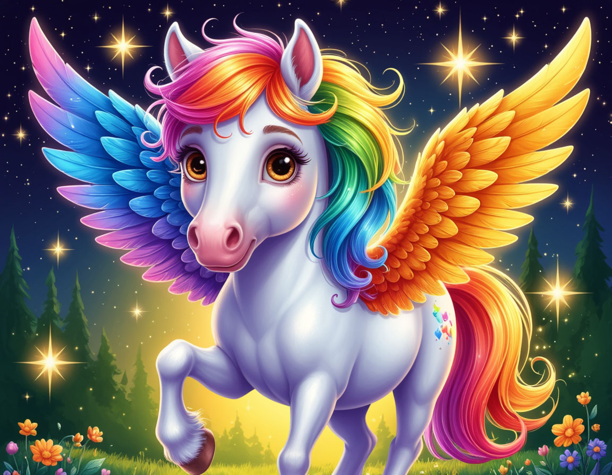

📖 Как играть
🕷️ Вместе с паучком Тимкой пройди 7 волшебных мест Долины динозавров.
🦕 В каждом месте динозавр приготовил 3 задачки. Читай внимательно!
⭐ За правильный ответ — 3 звезды. Ошибся — ничего страшного, паучок подскажет.
❤️ У тебя 3 сердечка. Если они закончатся — Тимка поделится новыми.
🦄 Реши все задачки — и найдёшь волшебного коня!
📍 Уровень 1 / 7
⭐ 0
❤️❤️❤️
🕷️
0%
В путь! Нас ждут великие дела!
🎉 Механизм разгадан!
⭐
⭐⭐⭐
+9 звёзд в копилку!
🏆 Волшебный конь найден!

✨✨✨Тимка обнимает тебя всеми восемью лапками: «Мы добрались! Волшебный конь дарит тебе управление временем — теперь ты сам решаешь, когда играть, а когда делать уроки. Спасибо, настоящий друг!» 🕷️
⭐ Звёзды: 0
✅ Задачки: 0 из 21
⏱️ В пути: 0 мин